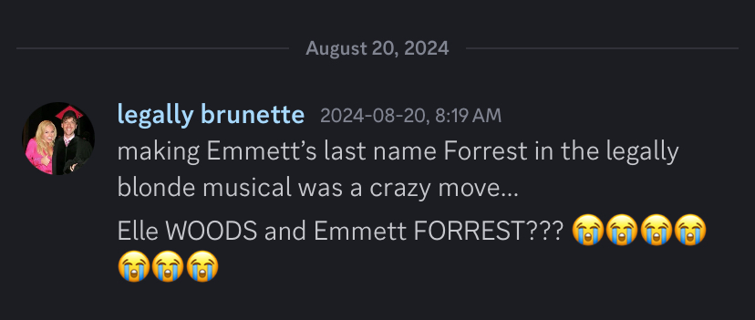
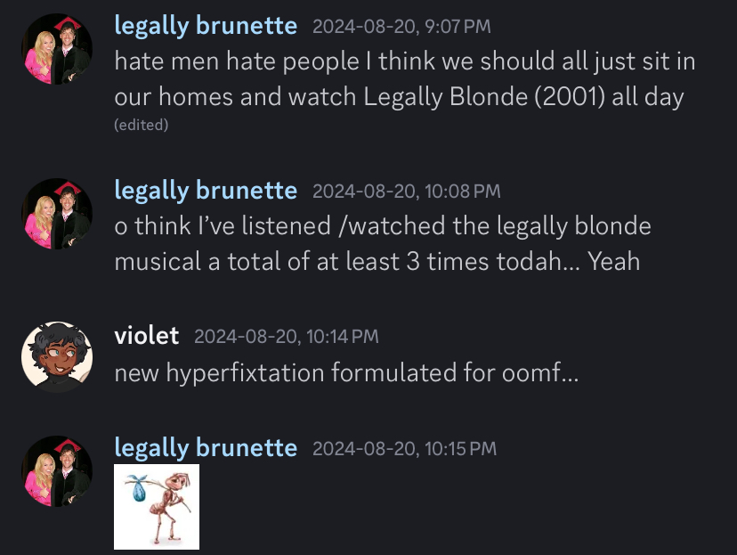

I don’t know when I first heard about Legally Blonde, but it was one of those things I just sort of knew about.
Around late April 2021, my brother, who had moved to Massachusetts with his wife and baby for a job just outside Boston, decided he would find a new job. Fortunately, he landed one! Unfortunately, it was halfway across the country.
Multiple discussions between him and my parents ensued, and the general consensus was this; his new job wasn’t starting until September, since he still had to finish his current contract. We were going to a wedding in August, so my parents decided that, after that, they would fly out to Boston, help my brother's family pack/move, and help him drive a moving truck out to where they were moving to.
I was still in high school at the time, just about to finish grade 11, and my mom explained to me that I’d just fly back home by myself after the wedding. Not passing up the chance to travel somewhere cool, I simply asked her: “Why can’t I just go to Boston with you?” Apparently she couldn’t argue with that!
This is all relevant because one of the only things I knew about Legally Blonde was that it took place at Harvard. Now that I knew I might be going to Boston in August, I decided now would be the perfect time to watch it. After all, why would I set foot on Harvard campus and not understand the story of the woman who brought us all there??
(as a note because it’s not completely relevant, but I did in fact visit campus! It was really cool but I felt awkward taking pictures because there were so many students around and we got there a bit late in the day. They were starting to ID people to make sure only students were on the campus. I regret it so bad. I have a picture of a church just off campus that I took standing on campus, but that’s it…
I did get to go to Fenway Park, once as a tour, and once for a Red Sox game! I’m glad I took pictures because, if you don’t know, Fenway Park is where Elle and Emmett planned to get married before she went to Washington in Legally Blonde 2. Hehe. I'd love to go back someday. Anyways, back to the story…)
A couple weeks later, on May 15, 2021, I asked my older sister (who was away at school at the time) if she wanted to watch a movie with me. I mentioned in passing that I wanted to watch Legally Blonde at some point, “because I have never seen it and it seems interesting.”
To which she replied, “I’m always down to watch that.”
We started promptly at 7:05 pm! By 8:42, we had finished. She asked me: “Did you like it?” I replied, “Yes.”
In fact, I may have liked it a bit too much— I don’t have any receipts but I do remember looking up stuff about it. I found the sequel online and skimmed through it, read some articles, etc etc. SOMETHING WAS BURNING INSIDE ME!!! I think that’s when I discovered the musical for the first time, saw the first number was called “Omigod You Guys” and decided that was too cringe for me (rip).
I sort of forgot about it after that. My first log of Legally Blonde (2001) on Letterboxd was on June 2, 2022; no notes, just five stars, a like, and marked as a rewatch.
The next time I watched it, it was April 20, 2023. My sister and I decided to have a little movie night, watching Legally Blonde and then The Barbie Diaries. My Letterboxd review of this was simply “I love feminism.”
I remember something about it seemed to stick with me. I NEEDED LEGALLY BLONDE!!! So, naturally, I decided to watch it again on April 22, 2023. My Letterboxd review of this date reads “something was calling me to watch again so I did!” (the something calling was autism btw)
I had just started a new job around this time, and we had a work party on April 24, 2023 to all get to know each other. We were sharing facts about ourselves, and the girl just before me mentioned something about doing the musical in high school. I don’t remember what she said, but that was my sign to tell all of my coworkers, “I’ve watched Legally Blonde three times in the last four days.” Naturally.
I mean, I was just trying to make friends bro. She mentioned Legally Blonde, so my autistic brain was like Hey! I know this! I’m pretty sure they all just thought that was weird. Oh well.
I rewatched the movie on June 23, 2023, with the classic “I love feminism.” I watched the movie again on October 31, 2023 with my roommates. One of them had never seen it.
I don’t remember particularly how we landed on this one. We were trying to find a movie to watch, and then I think someone (I don’t think it was me) mentioned how Elle dresses up in the movie, so it technically counted lol. Regardless, we watched it.
But that was my last time watching the movie… until…
August 2024. My family goes on vacation to this one specific spot every year, and not too far away is a smallish playhouse where they put on Broadway shows. We try to go to one when we’re there. That year, we ended up going to see Legally Blonde!
It was August 14, 2024, and I logged the movie on Letterboxd. I said, “watched a live performance of the musical instead of the movie but it was every bit as glorious sk (so) i’m going to log it anyway.” and OH BOY did it change my life! (it was actually almost three years to the day I visited Boston that my hyperfix truly developed! We landed in Boston on August 24 :3 it’s quite poetic to me)
It didn’t happen right away, but I definitely felt a sort of shift. I think it was after I got back to my apartment (I stay at uni over the summer to work) that everything began to unfold. I have a brain rot server I use for just that with some friends who are there to witness it (we all have one… it's basically a private twitter on discord), and there is a lot in there from around this time.
It was August 19, 2024, at 11:01 pm MST, that I said something before I even realized what was happening… “I can’t explain how I got here but I JUST FOUND AN ACE ATTORNEY X LEGALLY BLONDE FIC ON AO3?” THIS WAS JUST THE BEGINNING!!
The next morning, bright and early at 9:19 am, I send my first messages of the morning (the pfp and nickname were not like this when i sent it lol. Screenshots are from PST)

Over the course of the day, I talked about some friend drama that was going on at the time. As a result, Legally Blonde was my light in the darkness and whatever, which lead to my good friend Violet eventually pointing out the obvious:

A lot of things unravelled from here, I just went full out and indulged it. I changed my server nickname to “legally brunette” on August 25, 2024 and have stuck with it so far ahehehe.
Since then, Legally Blonde the musical has become a source of much happiness in my life!! It was my official “gateway drug” to the world of musical theatre. Hyperfixating on the musical led me to diving deep into the world of bootlegs and more specifically developing a love for Christian Borle. Naturally, I had to watch his other shows! And through that, I’ve found other actors/shows I’ve come to adore just as much, and the cycle continues! I LOVE IT I LOVE IT I LOVE IT!!!!
I’m not saying I haven’t been an influence on everything that’s happened since August, but like… since I’ve started liking it we’ve gotten a random OBC reunion (as in, a reunion 18 years instead of waiting for 20... idk) which even Christian Borle attended (!!!), they’re releasing the OBC recording on vinyl (normally idgaf but that was pre-ordered real quick), a new UK & Ireland tour is launching next year… ALL BECAUSE OF ME!! /nsrs
I talk about the musical quite a lot on Tumblr, including my 2.5k word semi analysis of Elle and Emmett’s relationship. I’ll probably touch that up and post it here soon! (but is here if you want to read it now).
I also have a post about the tie evolution :)
One of my tumblr oomfs also referred to me as "the god of legally blonde." Just feels right to mention that.
One last Autism Sixth Sense story… on a random October day I decided I’d watch a movie from my watchlist instead of rewatching Legally Blonde the musical or 2001 again. I was scrolling through my watchlist, and none of them were really calling to me. I kinda turned off my phone and then I remembered my sister talking about Freaky Friday (2003) a bit ago and it was a movie on my watchlist. So I was like, yeah whatever you know, this is now calling to me.
I'm getting through it and there's a scene where they're in gym class. The gym teacher looked familiar and I was like, huh. I've seen her before but idk where. But I kinda ignored it cause I mistake actors for each other all the time.
So anyways, I finish the movie and some of the credits are over the very last scene and I see: "Screenplay by Heather Hach (and Leslie Dixon)" And I'm like, HANG ON A SECOND. THE Heather Hach??? because she wrote the book for Legally Blonde the musical... it was just a crazy moment for me. i had no one to talk to about it. it was amazing. I had recognized her face from the "Road to Broadway" videos for Legally Blonde the musical lol.
so anyways, PLEASE TALK TO ME ABOUT LEGALLY BLONDE. we don't have a long history but it sure is rich.